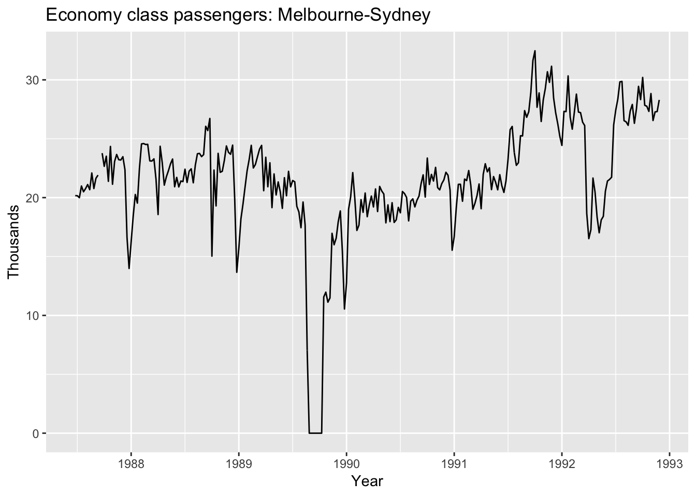

install.packages('fpp2', dependencies = TRUE)
# install.packages("devtools")
devtools::install_github("robjhyndman/fpp2-package")Note: I’m wondering if tibbletime might also be a useful package for us (check out vignettes!)
library(fpp2)## Warning: package 'fpp2' was built under R version 3.4.4## Loading required package: ggplot2## Loading required package: forecast## Warning: package 'forecast' was built under R version 3.4.4## Loading required package: fma## Loading required package: expsmoothThis loads ggplot2 and forecast.
autoplot(melsyd[,"Economy.Class"]) +
ggtitle("Economy class passengers: Melbourne-Sydney") +
xlab("Year") +
ylab("Thousands")
autoplot function sort of just thrown at us. I’m guessing it is loaded in the fpp2 package? Nope- looks like mainly data in there: https://github.com/robjhyndman/fpp2-package/tree/master/man
OK google says the ggfortify package: https://cran.r-project.org/web/packages/ggfortify/vignettes/plot_ts.html
library(ggfortify)##
## Attaching package: 'ggfortify'## The following object is masked from 'package:forecast':
##
## gglagplotNope! You can do ?autoplot and one of the options is from the ggplot2 package. Help docs say (using printr from Yihui):
library(printr)
# ??autoplot
help.search('autoplot', package = 'ggplot2')| Package | Topic | Title |
|---|---|---|
| ggplot2 | autoplot | Create a complete ggplot appropriate to a particular data type |
So it is available because fpp2 loads ggplot2. Moving on 😉